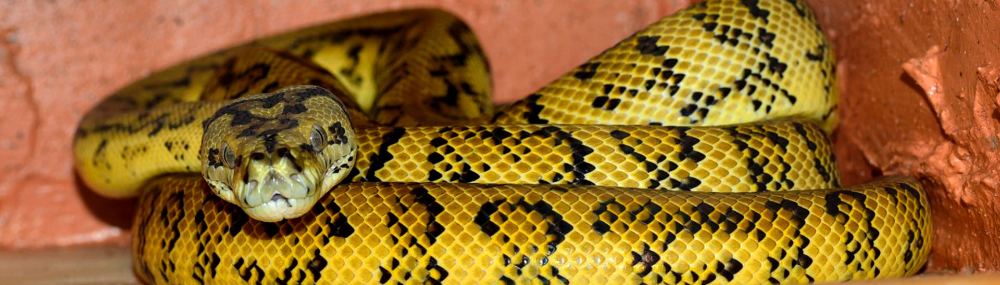
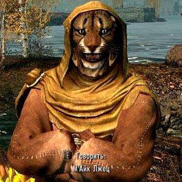

Colt Python
Colt Python (встречается название Combat Magnum) — шестизарядный револьвер калибра .357 Magnum, производившийся Colt’s Manufacturing Company в Хартфорде, штат Коннектикут.

Хаджиты (Каджиты)
На языке этой расы их самоназвание, каджит, означает «житель пустыни». Другой вариант перевода — хаджиты (в локализациях The Elder Scrolls III: Morrowind и The Elder Scrolls IV: Oblivion «Золотое издание»)